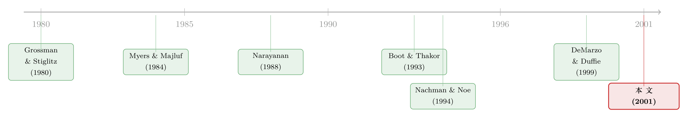

发股票，不是「稀释」，而是请人来替你查账
本文读的是 Fulghieri & Lukin (2001, Journal of Financial Economics)：把「外部投资者会不会去生产信息」这件事内生进来之后，啄食顺序理论 (pecking order theory) 那条「好公司该发债、别发股」的金科玉律就不再成立了。当信息生产的成本足够低、信号足够精确时，一只更敏感于信息的证券（股票）反而是好公司的最优选择——因为它会「招」来知情交易，把市场对自己的误判抹平。最优证券因此在「风险债」与「带凸性收益的复合证券（股票＋认购权，即一种权证）」之间切换。
1 一个被「钉死」的假设
先从一个几乎所有读公司金融的人都背得出来的结论说起。
Myers 和 Majluf（1984）告诉我们：一家公司的内部人，对自己的资产质量比外部投资者知道得多。于是当一家「好公司」要发行证券融资时，市场只肯按「平均质量」给它定价——它实实在在地被低估了。这部分被低估的损失，就是 稀释成本 (dilution cost)。为了少付这笔成本，好公司应该尽量发行那些「价值对私有信息不敏感」的证券：在内部人看来和在市场看来差别最小的那种。债（尤其是安全债）的价值几乎不随质量波动，股票的价值则高度敏感。结论顺理成章——先用内部资金，再发债，最后才发股。这就是啄食顺序。
这条逻辑漂亮、干净、深入人心。它甚至被一代又一代的实证文章反复检验（关于啄食顺序在数据里栽的跟头，可参见《啄食顺序理论的滑铁卢》与《越赚钱，越不肯借钱》）。
但这篇论文要做的事，是回到这条逻辑的地基上，敲一敲那块谁都没怀疑过的砖。
啄食顺序里有一个隐藏假设：内部人与外部人之间的信息不对称，是一个固定的外生量。无论你发债还是发股，这道鸿沟的宽度都一样。在 Myers–Majluf 的世界里，外部投资者无论花多少钱都不可能再多生产一点关于公司质量的信息——信息获取的市场是关着门的。
可现实里这扇门是开着的。分析师会去翻财报，对冲基金会去做尽调，专业投资者会花真金白银去打探一家公司到底成色如何。一旦承认外部人可以生产信息，问题的性质就变了。
2 把「信息」变成内生
接着，一个自然的问题是：如果外部人愿不愿意去查账，取决于你发的是什么证券，那会怎样？
这正是本文的核心一跃。信息不对称的程度不再是天上掉下来的常数，而是由证券的「信息敏感度」内生决定的。
直觉是这样的：信息越敏感的证券，知情者据此交易能赚到的钱越多——他知道好公司、就低价买入；知道坏公司、就高价做空。安全债不管公司好坏都得照面值还，知情者无利可图，自然没人愿意花钱去查；而股票是残余索取权，好坏之间天差地别，去查一查、然后顺势交易，是笔划算的买卖。这正是 Grossman 和 Stiglitz（1980）那套「信息有价、价格反映信息」的老逻辑，只不过这里把它接到了证券设计上。
于是反转的种子就埋下了：一只好公司，如果发行更敏感于信息的股票，等于是在主动「悬赏」——招揽专业投资者去生产信息、去知情交易。而知情交易会把「这是一家好公司」这个事实，通过需求传递给市场，从而抬高发行价、降低发行失败的概率。
换句话说，发股票付出的是更高的「事前」稀释敏感度，换回的却是更低的「事后」信息不对称。这笔账到底划不划算，得算。
3 模型
下面把这套机制一步步搭起来。涉及一些公式，但每一步的直觉我都会点明；实在不耐烦推导的读者，可以记住第 3.4 节那个倒 U 形结论，直接跳到第 4 节。
3.1 设定
一个两期经济，\(t = 0, 1\)，所有人风险中性，无风险利率为零。
一家全股权公司在 \(t=0\) 手上有个项目，需要投入固定金额 \(I\)。\(t=1\) 项目价值 \(V\) 实现：好公司值 \(V_G\)，坏公司值 \(V_B\)。外部人不知道真实质量，只有先验信念 \(\theta\) 认为公司是好的。关键的参数排序是
$$ 0 < V_B < I < V_G, $$
也就是说只有好公司的项目才值得投（坏公司的项目是负 NPV）。同时先验下整体仍然有利可图：
$$ E(V) = \theta V_G + (1-\theta) V_B > I. $$
为什么坏公司也会来融资、来「冒充」好公司？因为项目一旦上马，经理能拿到一份不可契约化的私人收益。所以坏公司只要能骗到钱就想投——这就保证了 混同 (pooling) 的动机，使信息不对称真正成为问题。
公司没有现金，必须在 \(t=0\) 把 \(I\) 全部从市场上融来。它要么发股票（卖出比例 \(\gamma\)），要么发债（面值 \(D\)）。
3.2 两类投资者
市场上有两类投资者：
- 无信息投资者 (uninformed investors)：他们的总美元需求 \(u\) 是外生、随机、无弹性的，分布在 \((-\infty, +\infty)\) 上，密度为 \(g(u)\)。可以把它理解成「噪声需求」。
- 专业投资者 (specialized investors)：原子化的交易者，每人手握 \(1+c\) 美元。在交易前，他们可以选择支付一笔 信息生产成本 (information-production cost) \(c\) 去变成知情者——本文为简化假设，一旦付费就能完美学到公司的真实质量。学到之后，他若知道公司好就买入 1 美元的证券，知道公司坏就做空 1 美元。
设选择变成知情者的专业投资者测度为 \(a\)（内生）。那么知情者的总需求 \(x_I\)：好公司时 \(x_I = a\)，坏公司时 \(x_I = -a\)。
这里 \(a\) 就是全篇的「主角」：它衡量了有多少信息被生产出来，而它的大小由证券的信息敏感度决定。 自由进入条件会让 \(a\) 调整到「每个知情者的预期交易利润恰好等于成本 \(c\)」为止——证券越敏感、利润越厚，进来的人越多，\(a\) 越大。
3.3 做市商如何「读」需求
有一群竞争性的 做市商 (market makers)。他们只观察到无信息者与知情者加总后的净需求
$$ x \equiv u + x_I, $$
然后把证券价格定在「给定观测需求下的条件期望价值」，并自己吃下多空差额来清算市场。
关键在于：做市商怎么从 \(x\) 反推公司质量？用贝叶斯法则。设 \(a_M\) 是做市商对均衡中知情交易量的信念，则后验信念 \(\hat{\theta}\) 为（式 2.1）：
这个方程是全篇的枢纽。注意 \(a_M\) 出现在两个密度的平移里：正是知情交易，把「好」与「坏」两种情形下的需求分布拉开了距离。如果没有人去生产信息（\(a_M = 0\)），两个密度重合，\(\hat\theta(x,0) = \theta\)——需求里没有任何信息，后验永远等于先验，市场对你的误判一分都消不掉。这恰恰就是 Myers–Majluf 的世界。
为了让模型听话，作者对 \(g\) 加了一个温和的假设（Assumption 1）：\(g\) 处处为正、单峰、尾部递减，且 对数凹 (log-concave)，即 \(\partial^2 \ln g(u)/\partial u^2 \le 0\)。正态分布、Student 分布都满足。在此之下有：
Lemma 1：只要 \(a_M > 0\)，后验 \(\hat\theta(x,a_M)\) 就是观测需求 \(x\) 的增函数——需求越旺，市场越相信你是好公司；且 \(x\to+\infty\) 时 \(\hat\theta\to 1\)，\(x\to-\infty\) 时 \(\hat\theta\to 0\)。
由此存在一个 临界需求 (critical demand) \(x_c\)，由下式定义（式 2.6）：
$$ \hat{\theta}(x_c, a_M)\, V_G + \bigl[1 - \hat{\theta}(x_c, a_M)\bigr] V_B = I. $$
含义很直白：当需求恰好等于 \(x_c\) 时，市场给公司的估值刚好等于所需投资 \(I\)。一旦实际需求 \(x < x_c\)，市场估值低于 \(I\)，公司融不到所需的钱，发行失败、项目流产。
3.4 全篇最妙的一步：倒 U 形
然后，真正关键的一步来了。
考虑一家好公司。它的总需求是 \(x = u + a\)。定义 \(u_G \equiv x_c - a\) 为「让发行刚好踩在失败线上的那个无信息需求」。只要实际的 \(u > u_G\)，发行就成功；\(u < u_G\) 就失败。所以 \(u_G\) 越低，发行成功的概率越高——这是好公司真正在意的东西。
在均衡里做市商信念正确（\(a_M = a\)），把 \(x_c = u_G + a\) 代回 (2.6)，整理可得 \(u_G\) 满足（式 2.7）：
$$ \frac{g(u_G)}{g(u_G + 2a)} = \frac{1-\theta}{\theta}\cdot\frac{I - V_B}{V_G - I}. $$
这个式子隐式地定义了一条函数 \(u_G(a)\)——把发行成功的门槛，和信息生产的数量 \(a\) 联系了起来。它长什么样？Lemma 2 给出了答案：\(u_G(a)\) 是一条倒 U 形曲线，在某个 \(a^\# > 0\) 处取得唯一最大值，\(a^\#\) 满足
$$ \frac{g(u^\# - 2a)}{g(u^\#)} = \frac{1-\theta}{\theta}\cdot\frac{I - V_B}{V_G - I}, \qquad u^\# \equiv \arg\max_u g(u). $$
倒 U 形的直觉值得停下来品一品：
- 当知情交易 \(a\) 很低时，需求几乎不含信息，证券的售价对实际需求不敏感。而因为先验下项目本就有利可图（\(E(V) > I\)），绝大多数需求实现下项目都能融到资，只有 \(u\) 极端地低时才失败——所以此时 \(u_G\) 很低，成功概率很高。
- 随着 \(a\) 增大，需求开始「说话」：好公司确实更容易被认出来，但代价是，一旦运气不好碰上低需求，市场会更狠地惩罚你——门槛 \(u_G\) 反而升高。这是上升段。
- 但当 \(a\) 大到越过 \(a^\#\)，信息生产足够充分，知情买盘本身就把总需求顶了上去，\(u_G\) 转而下降。这是下降段。
于是发股票的价值就清楚了：股票比债更敏感于信息，能招来更大的 \(a\)。如果它能把公司推到倒 U 形的右半边、推到一个比债所能达到的更低的 \(u_G\)，那么发股票就带来了更高的发行成功率。
4 反转：什么时候股票打败债
把上面的逻辑收口。
设发股票诱发的知情交易量为 \(a_E^*\)，发债诱发的为 \(a_D^*\)，且因为股票更敏感，\(a_E^* > a_D^*\)。好公司比较的是 \(u_G(a_E^*)\) 与 \(u_G(a_D^*)\) 谁更低。
作者证明存在一个临界的信息生产成本 \(c^*\)，它恰好让股票和债诱发的两种知情交易量给出相同的门槛 \(u_G\)。于是：
- 若 \(c < c^*\)：信息便宜，专业投资者踊跃入场，\(a_E^*\) 足够大，\(u_G(a_E^*) < u_G(a_D^*)\)——好公司发股票，违反啄食顺序。
- 若 \(c > c^*\)：信息太贵，没人愿意去查账，发股票招不来足够的知情交易，反而白白承担了高敏感度的稀释——好公司发债，回到啄食顺序。
这就是本文的中心结论：啄食顺序不是普遍真理，而是「信息生产成本足够高」这一特例下的结果。 进一步的比较静态告诉我们，好公司更倾向于发股票，当：(1) 信息获取成本 \(c\) 更低；(2) 信号精度更高；(3) 项目价值相对于所需外部资金更大（即 \(V_G - I\) 相对 \(I - V_B\) 更大）；(4) 内部人与外部人之间的信息不对称更严重。
最后两条尤其反直觉：在标准啄食顺序里，信息不对称越严重，越该躲着股票走；而在这里，信息不对称越严重，发股票去「请人查账」的价值反而越大。
5 最优证券设计：从债到「权证」
到这里，证券的选择还被人为限定在「股」与「债」之间。第 7 节把这道枷锁去掉，问一个更彻底的问题：给定这套信息生产机制，什么形状的证券才是最优的？
答案再次随成本切换：
- 当信息生产成本 \(c\) 足够高：最优证券是 风险债 (risky debt)——和受限情形下的结论一致。既然没人会去生产信息，那就索性把证券设计得对信息最不敏感，把稀释压到最小。这正是 Myers–Majluf 的逻辑在最优设计语言下的重述。
- 当信息生产成本 \(c\) 足够低：最优证券是一个带 凸性收益 (convex payoff) 的复合证券——由股票加上一组看涨期权构成，在某些情形下可以解读为一种传统的 权证 (warrant)。
凸性是这里的点睛之笔。凸性意味着证券在公司质量高时的收益增长得更快——它把价值进一步「压」向好状态，从而比普通股票更敏感于信息，能招来更多的知情交易。当查账便宜时，把敏感度推到极致是值得的；当查账昂贵时，把敏感度压到极致（安全债）才是对的。最优证券，本质上是在「信息敏感度的收益」与「稀释成本」之间寻找那个由 \(c\) 决定的甜点。
6 它预测了什么
作为一篇理论文章，本文不跑回归，但第 8 节给出了一组清晰、可检验的经验预测，值得照搬：
一家公司更可能发行股权（而非债），当：信息生产技术成本更低、精度更高；项目价值相对融资额更大；以及——与传统直觉相反——内部人与外部人之间的信息不对称更严重。
这些预测把「证券选择」与「信息环境」直接挂钩，给了实证研究一把不同于税盾、破产成本的钥匙：去看一家公司所处行业的信息可生产性（分析师覆盖、信息透明度、专业投资者密度），而不只是看它的盈利能力或杠杆水平。
文献脉络
把这条线索捋一捋。
最上游是两条平行的河。一条是信息经济学的源头：Grossman 和 Stiglitz（1980）奠定了「信息有成本、价格部分反映信息、于是信息生产本身成为一种经济活动」的范式——本文里专业投资者花 \(c\) 去查账、再据此交易，正是这套逻辑的直接后裔。另一条是资本结构的信息不对称传统：Myers 和 Majluf（1984）与 Myers（1984）确立了啄食顺序，把「稀释成本」钉成了证券选择的第一性原理。

接着，一批论文沿着 Myers–Majluf 往「证券设计」延伸。Narayanan（1988）在不对称信息下讨论债与股的选择；Nachman 和 Noe（1994）在内部人已知类型的「事中」阶段，刻画了「让内部人偏好债胜过股」所需的现金流分布条件（一个条件随机占优条件）——他们和本文最大的区别在于，这些工作都没有考虑外部人主动生产信息。DeMarzo 和 Duffie（1999）则从「事前」角度设计证券，权衡知情带来的流动性损失与保留成本（关于把现金流打包再切片的思路，可参见《把资产「打包」再「切片」》）。
与本文血缘最近的是 Boot 和 Thakor（1993）。他们也让投资者内生地生产信息，并证明卖方的最优策略是把现金流拆成一只「促进知情交易的高敏感证券」加一只「低敏感证券」。但本文在几个关键维度上与之分野：Boot–Thakor 里卖方把资产整体出售、稀释效应消失，因而总是「拆分最优」、且对结构无所谓；本文里公司只融固定金额 \(I\)、保留残余索取权，稀释成本因此真正咬人，证券的高低敏感度选择随参数切换——这才让模型能预测「什么时候哪种证券最优」。
本文（2001）就站在「信息生产 × 证券设计 × 内生信息不对称」这三条线的交汇点上，把啄食顺序从一条定律降格成了一个特例。
评论与延伸（Q&A + 研究方向）
(a) 几个可能的疑问
Q：这和啄食顺序到底是「推翻」还是「包含」？
是包含，不是推翻。本文证明啄食顺序对应于「信息生产成本 \(c\) 足够高」的区域——在那个区域，结论与 Myers–Majluf 完全一致。本文的贡献是把那条定律放进一个更大的参数空间，指出在 \(c\) 低、信号精的另一半空间里，结论会反过来。
Q：发股票「招来」知情交易，为什么对好公司是好事？知情者不是也会做空坏公司、压低价格吗？
关键在于条件期望。好公司知道自己是好的：它发股招来的知情者，学到「好」之后会买入，把需求推高、把市场后验 \(\hat\theta\) 推向 1，从而抬高发行价、降低踩到失败线 \(x_c\) 的概率。做空只发生在坏公司身上。所以从好公司的事前视角看，更多知情交易意味着「我的好质量更容易被市场认出来」，是净收益。
Q：为什么 \(u_G(a)\) 是倒 U 形，而不是单调下降？多生产信息不该总是好事吗？
因为信息是把双刃剑。在低 \(a\) 段，由于项目先验就有利可图，几乎总能融资；多一点信息反而让市场在低需求时「更敢」惩罚你，门槛升高。只有当 \(a\) 大到越过峰值 \(a^\#\)，知情买盘把总需求顶起来的力量才占上风，门槛转而下降。股票的价值，正在于它能把公司推到这条曲线的右半边。
Q：模型假设知情者「完美」学到质量，这是不是太强了？
是简化，但不是要害。第 6 节专门讨论了「噪声信息」的情形（投资者只观察到带噪声的信号），主要结论依然成立。完美信息只是让前面的推导更干净。真正的驱动力是「信息敏感度 → 信息生产量 → 信息不对称程度」这条链条，而非信号是否完美。
Q：最优证券里的「凸性收益 / 权证」是怎么冒出来的？
凸性让证券收益在好状态下增长更快，等于把价值进一步压向「好」这一端，使证券比普通股更敏感于信息、招来更多知情交易。当查账便宜（\(c\) 低）时，把敏感度推到极致是划算的，于是最优证券呈现凸性，形如股票加看涨期权——也就是一张权证。当 \(c\) 高时则相反，安全/风险债的低敏感度最优。
Q：这套理论能不能解释「发股票时股价为什么常常下跌」？
它给了一个不同的切口。在纯 Myers–Majluf 里发股是坏信号、股价必跌。但在本文里，发股是好公司主动「请人查账」的信号，且只在信息便宜的环境里才这么做——这意味着发股的市场反应应当依赖于公司所处的信息环境，而非一律为负。这是一个可以拿去和数据对质的差异化预测。
(b) 几个可能的研究问题与提案
1. 把这套机制搬到公司债一级市场。
【经济故事】本文的主角是「信息敏感度→信息生产」，而公司债的信息敏感度高度依赖信用等级与契约结构。一个自然的猜想：信息越容易被生产的发行人（高分析师覆盖、高透明度），越敢发行信息敏感的次级/可转债，从而压低发行折价。 【可行性】中。需要 TRACE 的一级与二级成交数据、Mergent FISD 的债券特征、以及分析师覆盖作为「信息可生产性」的代理。识别上可借助分析师覆盖的外生变动（如券商合并导致的覆盖中断）作为信息环境冲击。doable，但「信息生产量 \(a\)」本身难直接观测，需要用知情交易代理（如发行前后的订单失衡或卖空）来近似。
2. 外资持有人作为「信息生产者」。
【经济故事】专业投资者在本文里是抽象的知情者。现实中，外资机构往往正是那批愿意花成本去尽调、并据此交易的「专业投资者」。一个市场开放、外资进入增加，是否会让本地公司转向更信息敏感的证券（股权、可转债）？ 【可行性】中高。可用各国资本市场开放的时点（可投资度变化）作为外资进入的外生冲击，结合公司层面的证券发行选择做双重差分。本博客已有大量外资与信息传递的相关证据可作铺垫（如《外资来了，全球新闻就传得更快吗？》）。识别相对干净，数据可得。
3. 信息生产成本的「准自然实验」。
【经济故事】本文最锋利的比较静态是「\(c\) 越低越发股」。如果能找到一个外生压低或抬高信息生产成本的冲击（如 EDGAR 电子化披露、XBRL 强制、或某类数据供应商进入某些行业），就能直接检验证券选择是否随之向更敏感的一端移动。 【可行性】高。EDGAR 分阶段上线、XBRL 强制采用都有现成的交错时点，可做交错双重差分（注意近年关于交错 DiD 的方法学警告，参见《当「更稳健」的设计悄悄把符号弄反了》）。这是本文预测里最可直接落地的一条。
4. 凸性证券（权证/可转债）的横截面分布。
【经济故事】本文预测：信息便宜的环境里，最优证券带凸性。那么可转债、附认股权债的发行，是否更集中在信息可生产性高、信息不对称严重、且 \(V_G - I\) 相对大（成长型）的公司？ 【可行性】中。证券类型数据可得（FISD、SDC），成长性与信息不对称有成熟代理。难点在于把「凸性是为招揽信息生产、而非为节税或择时」这一机制从其他可转债理论中识别出来——需要交互项（信息环境 × 凸性发行）来做区分。
参考文献
Boot, A., Thakor, A. (1993). Security design. Journal of Finance 48(4), 1349–1378.
DeMarzo, P., Duffie, D. (1999). A liquidity-based model of security design. Econometrica 67(1), 65–99.
Fulghieri, P., Lukin, D. (2001). Information production, dilution costs, and optimal security design. Journal of Financial Economics 61(1), 3–42.
Gale, D. (1992). Standard securities. Review of Economic Studies 59(4), 731–755.
Grossman, S.J., Stiglitz, J. (1980). On the impossibility of informationally efficient markets. American Economic Review 70(3), 393–408.
Myers, S.C. (1984). The capital structure puzzle. Journal of Finance 39(3), 575–592.
Myers, S.C., Majluf, N.S. (1984). Corporate financing and investment decisions when firms have information investors do not have. Journal of Financial Economics 13(2), 187–221.
Nachman, D., Noe, T. (1994). Optimal design of securities under asymmetric information. Review of Financial Studies 7(1), 1–44.
Narayanan, M.P. (1988). Debt versus equity under asymmetric information. Journal of Financial and Quantitative Analysis 23(1), 39–51.